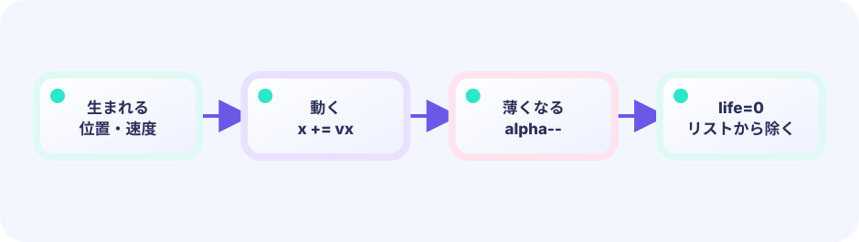

PRESENTATION STATE
Proxyはfrom/toとTweenだけ
代理には速度判定・得点・当たり判定を持たせません。表示に必要なIDと二点、時計だけで完結させます。
★★★★★ / PLAYABLE
捕獲された星は当たり判定から即座に消すべきですが、画面からも瞬間消去すると手応えがありません。そこで星のIDと捕獲位置を表示代理Proxyへ写し、本物は削除、代理だけを放物線でHUDへ飛ばします。カゴも同じTweenで潰れて戻ります。
このコースも LEVEL 01 の Update（数字）とDraw（絵）の独立した境界の上にあります。ここでは同じ状態を別の描き方へ投影する方法を一段深く扱います。
ADVANCED FX の設計原則
updatePlay() は衝突・得点・盤面などの正解を先に確定し、結果を値やイベントとして一度だけ渡します。演出側はその事実から補間・姿勢・残像・粒子の時間を進めます。Draw は状態を読むだけで、得点も座標も書き換えません。この境界があるから、派手な画面とGPUなしで試せるユニットテストを両立できます。
PATTERN A03 / VISUAL PROXY
取得物をアニメーションのためルール側へ残すと、衝突や保存データに「取得済みだが存在する物」が混ざります。
PRESENTATION STATE
代理には速度判定・得点・当たり判定を持たせません。表示に必要なIDと二点、時計だけで完結させます。
TEST CONTRACT
PLAYABLE / LIVE GO + マウス
星はカゴで弾け、光の代理が弧を描いてHUDへ移動します。カゴの潰れと衝撃波も捕獲イベント一回から始まります。
はじめて読む人へ
エンティティは星や天次郎のようにゲームのルールへ参加する物体、FXは勝敗を変えない一瞬の見た目。混ぜないとはstarsとparticlesを別リストで持つことです。Updateは星の落下と捕獲を決め、Drawは星と粒を重ねます。appendはリスト末尾へ新しい一個を足します。 Go用語メモ：整数型（int）は小数を持たない数、浮動小数点型（float32/float64）は小数を持てる数、typeはデータの箱の種類を決める言葉、funcは処理をひとまとめにする関数の印です。[]TはTを順番に並べるリスト、appendはその末尾へ一つ足す命令です。Updateは数字と状態を進め、Drawはその結果を絵にします。
このページの1本
説明と次のコードを対応させてから、ゲームで変化を確かめよう。
particles = append(particles, burst...)
DEEP DIVE / VISUAL PROXY
ゲームのstarsには落下・捕獲・失敗だけを持たせます。捕獲時にNewProxy(id, from, HUD, frames)を作り、starsからは除去します。Proxyは衝突判定を一切持たず、完了したら表示リストから消えます。
どの星の表示かを値で追跡する。
star.id
捕獲済みの星は再判定しない。
stars = next
位置をHUDへ補間し、終われば捨てる。
proxies []Proxy
TRACE IT / RULE → MOTION → PIXELS
捕獲直後にstarsの長さが減り、proxiesが増えることを追います。代理が飛んでいる間に同じ星がもう一度捕獲されてはいけません。
IN THE DEMO
アニメーションのためにcaughtフラグを星へ足し続けず、別の短命モデルへ必要最小限を写します。
if caught {
g.score++ // gameplay commits now
g.proxies = append(g.proxies,
vfxmotion.NewProxy(st.id, st.x, st.y, hudX, hudY, 24))
continue // st is absent from next gameplay slice
}TEST THE CONTRACT
Proxyの0Fは捕獲位置、最終FはHUD位置、指定フレーム後にDoneとなることを画像なしで確認します。
FAILURE MODE
見せるために星を残すと、カゴの中でtickごとに再捕獲される事故が起きます。
DESIGN PAYOFF
拾った物がUIへ吸い込まれる表現は、ゲーム実体と表示代理の分離で一貫して作れます。
FEEDBACK